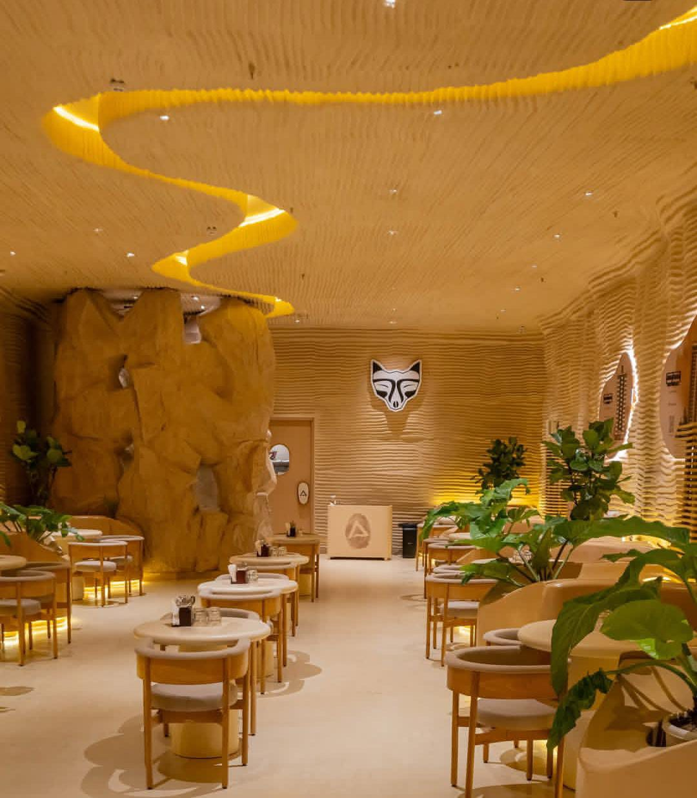
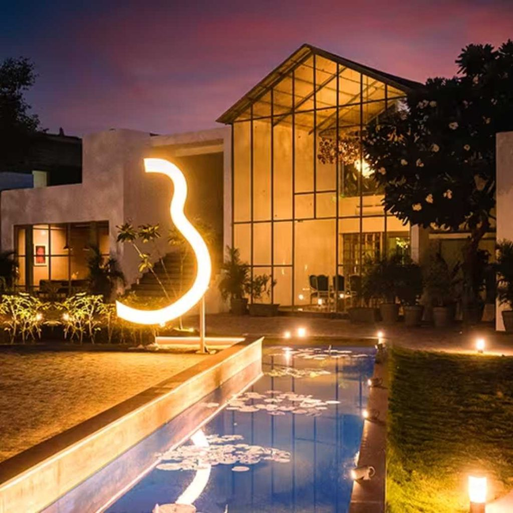
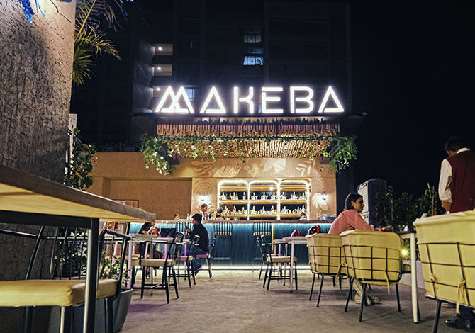
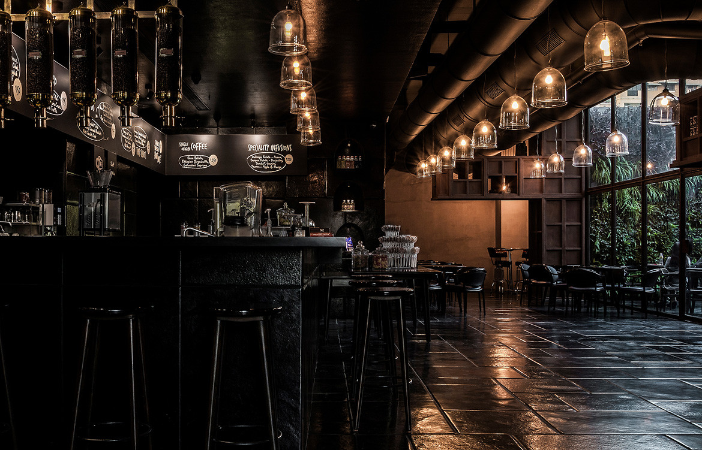
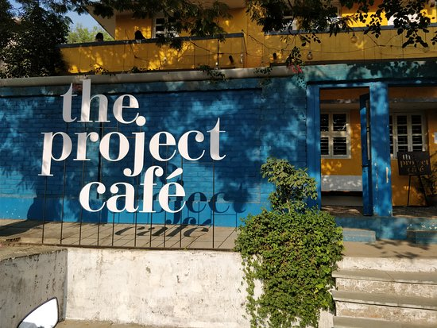
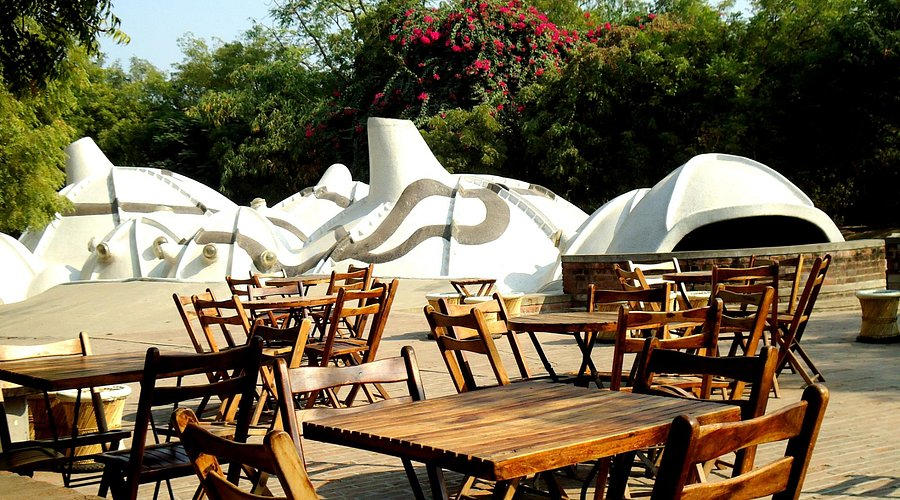
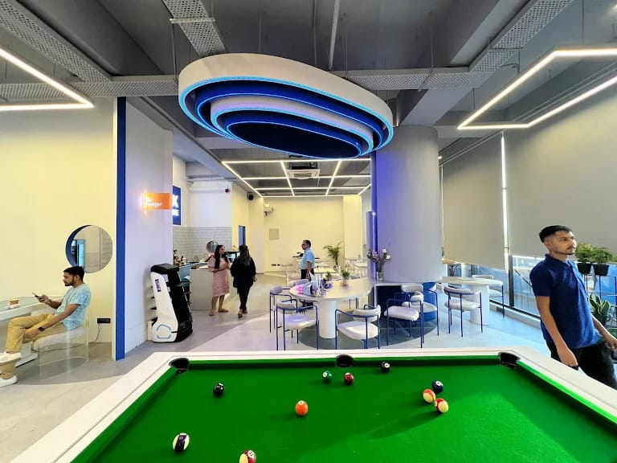
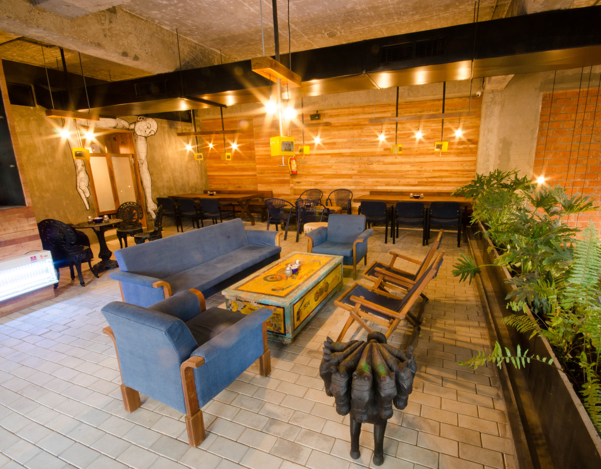
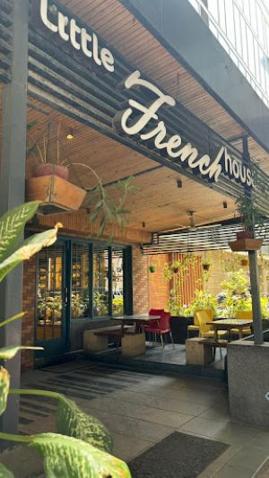

Featured Cafes

K's Charcoal Cafe
Unique charcoal-grilled specialties and artisanal coffee in a rustic-modern setting.
Explore Cafe
Kaffa Coffee Roasters
Specialty coffee pioneers bringing Ethiopian traditions to Ahmedabad's coffee scene.
Explore Cafe.jpeg)
Triton
Nautical-themed cafe with innovative beverages and a relaxed, creative atmosphere.
Explore Cafe
Banjara Gourmet Cafe
Bohemian charm meets gourmet cuisine in this traveler's favorite spot with global flavors.
Explore Cafe
The House of Makeba
African-inspired cafe with live music, exotic flavors, and vibrant cultural experiences.
Explore Cafe
Java+
Premium vibe, coffee, and desserts in a beautiful outdoor setting.Premium cafe in a hotel setting—great for desserts and serene seating.
Explore Cafe
The Project Cafe (Yellow House)
Artistic cafe in a converted house—works as gallery, hosting events and creative workshops.
Explore Cafe
Zen Cafe
Known for its cozy, calm ambiance with both indoor and garden‑style seating, often filled with students or professionals working on laptops.
Explore Cafe
Caffix - The Tech Cafe
Eat, sip coffee, and get your Apple devices repaired—all in one spot.
Explore Cafe
Mocha Cafe
Stylish, spacious, with a good mix of indoor and outdoor seating, including lounge-style areas in a converted business park
Explore Cafe
The Little French House
Styled like an intimate French bistro, this café offers a warm, rustic décor—with brick walls, cozy tables, and a small garden-like outdoor area
Explore Cafe